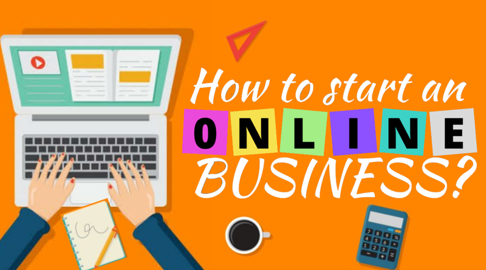

1. Create a Product For Your Business
Nearly every business out there can benefit from creating a product for themselves and marketing it on their website. This is a great way to increase sales while serving from a distance. It is also a method of business that can be automated and reused over and over again. Some businesses will have a more difficult road towards product creation than others. The best products come from thinking of what you can do that helps your customers without needing in-person assistance. For example, if you own a restaurant look into making a cookbook or possibly some kind of special spice mix. In contrast, if you own a highly specialized service business then consider offering helpful DIY guides and resources. This method of marketing products can open new avenues of income that might have never been available before COVID.
2. Open Your Store Online
On the other side of the coin, there are some great options out there if you already sell products at your physical location. Getting your store online is a great way to open it back up to the public, even if your physical location is temporarily limited or closed. This can be a great way to reclaim some of your lost sales and supplement your income. Luckily starting an online store is much easier than it has ever been before. For more assistance here is a great guide on how to start an online store.

s 3. Create Free Online Content
Every business, no matter the service or product, can benefit from creating content for their target customers. If you already have customers out there that are interested in investing in your products or services there will be many more who are interested in reading and learning about how they can make their lives easier using your knowledge. Sharing this knowledge is a wonderful way to help your online community and build great connections with potentially interested customers.No matter what business you might own there is a place for it online. The best place might be on a social media platform, email list, or a forum. By taking the initiative and meeting your customers online you can help them and build trust in your industry. Helping customers in this way you can create a powerful marketing strategy and a loyal fanbase that trusts you as the go-to expert.
4. Create an Online Course
Every business owner knows a lot about their craft, if they did not then they would not be in business. Why not condense that knowledge and put it into prepackaged course that can be sold back to the customers? The internet is full of little bits of information, but courses go beyond all of that by offering comprehensive guides that cover all parts of a subject and leave the student with a much better understanding.This is a great way to build connections and reach customers you might not have had the chance to connect with before. Creating a standalone course does not take much equipment or initial investment, just a smartphone, some lighting, and a mic. With only a hundred dollars or so you could get started creating your course today.Courses are also a great way to maximize your time. Instead of answering individual questions you can bundle your knowledge together and create a course that you can sell at any time without any additional investment required.Some great examples of online courses different businesses could make:Restaurant – how to cook some of our best dishes at homeRunning event – The step by step guide to preparing for a marathonClothing company – Creating the style of your dreams – How to put together jaw-dropping outfits
5. Live Online Classes and Services
If you normally offer in-person classes / services then this is a good time to find a way to offer those same services online. For example, many educational classes could be done just as easily online as they could in person. Even many sports or extracurricular activities could also be reframed to be taught from behind a screen. This could be a good way to add in another service for those who are unable to leave their homes.Online classes are different than courses because they need to be filmed live while working with your customers. Classes cannot be prerecorded in the same way that many courses can be made.

6. How to Use Online Tools To Streamline Sales
You can online tools to streamline your business and make it more efficient. A great example of this is what restaurants have done by creating digital menus and online ordering processes to cut down on person-to-person contact and wait times.
7. Create Branded Merchandise
Branded merchandise is another great way to capitalize on your loyal customers and followers. This allows your largest fans to show their love for your company. Best of all merchandise such as t-shirts and other clothing items are free marketing for your company. This can create more overall awareness for your business without having to pay anything in terms of a marketing budget other than the price of the merchandise.These are just a few ways your business can be benefited from shifting more resources online. It can be a difficult transition, but there can also be a great reward for the upfront work. Our world is shifting online at an incredibly fast pace. Finding ways to get started online or invest more resources online now is a great way to get ahead of your competition.
~Ganesh Navale